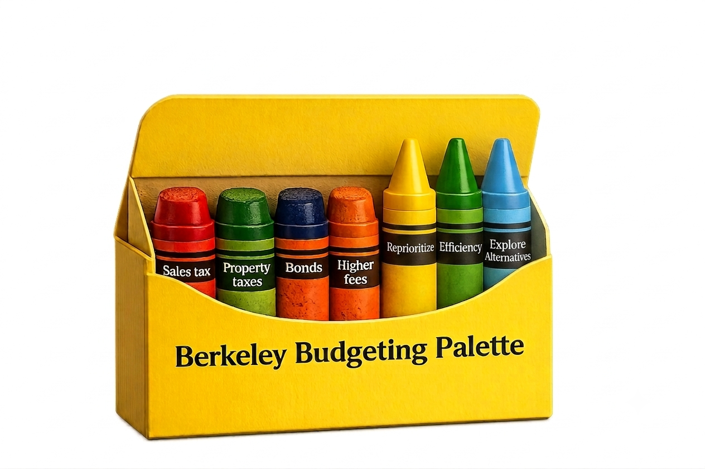

There are at least seven ways to close a structural deficit. Berkeley's council reaches for four — and every one of them raises money from somebody. The three that would change what the city spends money on stay in the box.
Every budget problem admits more than one kind of answer. You can raise more money, or you can change what you do with the money you have. Those are different crayons. A council that repeatedly reaches for only one family will produce a particular kind of city — not because anyone chose that outcome explicitly, but because the other options stopped being considered.
This page asks which options Berkeley's council actually considers, how we can tell, and what happens when the palette narrows. It is not a claim that new revenue is always the wrong answer. It is a claim about the range of answers considered before choosing it: Berkeley's four well-used crayons all sit on one side of the box.

Every worn crayon raises money from someone. Every sharp one would change what the city does with the money it already has.
The argument on this page is easier to feel than to read. The Berkeley Budget Lab hands you the City Manager’s own scenarios and asks you to close the gap: protect a department, accept its baseline cut, or make it absorb more. Every service you protect pushes the savings onto one you did not.
That constraint is the whole point. Reprioritizing means naming what stops, and the tool will not let you avoid naming it — which is exactly why the crayon stays in the box.
Open the Budget Lab →The city's own auditor has said the same thing in the city's own language. The April 2026 report on Berkeley's financial condition found that the Council's adopted fiscal policies do not require anyone to check whether recurring revenue covers recurring expenditure — a foundational standard the Government Finance Officers Association has published for decades. The structural deficit runs $32 million in FY2027 and $33 million in FY2028. Recent budgets were balanced with one-time measures: $4.7 million out of the workers' compensation reserve, $3 million withdrawn from the pension pre-funding trust.
A deficit that recurs cannot be closed with money that does not. That is the case for reaching into the other side of the box. And the underlying fiscal problem is the auditor's finding, not ours.
Not by counting who says the word "efficiency." Talk is a poor guide here: a member can name an option without proposing it, or read a staff report that mentions it, and neither is the same as putting it on the table.
We use votes between competing motions. When someone moves a substitute, every member has to pick, on the same item, in the same minute, on the record. The motions are known quantities, so there is no ambiguity about what was chosen, and one vote is one fact, so repeated discussion cannot inflate it. Where the record shows an alternative was genuinely available and nobody moved it, that counts too.
That test reveals four different kinds of conduct, and they are not equally serious.
No member raises any alternative. There is no substitute motion, no question about what could be cut, no request for a cost-per-unit figure. The item passes as presented.
This is blindness, whether or not anyone intends it, and it is a condition of the council rather than a failing of any one member. This is a council-wide condition rather than an individual finding, so we do not score it against members. A failure everyone shares differentiates nobody. Individual credit begins when someone puts a missing option back on the table.
An alternative reaches the floor and is voted down. Now the record shows exactly who reached for it. This is the most informative case, because it separates members who were absent from the argument from members who were present and chose otherwise.
Losing counts as engagement. A member who moves the motion and is outvoted has done the job; the scorecard's Ownership of Outcome dimension credits them for it. What it does not credit is declining to have the argument at all.
The instrument is finer than a simple split, because a member can reach for the alternative and then let go of it. Voting for a substitute and then for the item it was meant to replace is a distinct position — not the same as never reaching, and not the same as holding. Successive roll calls on one item make that visible, which no measure of speech can.
A member states a principle and then votes against it on the same item. This is the sharpest of the four, because the standard is the member's own. There is no external benchmark to dispute and no way to answer it with "you simply disagree with them" — the disagreement is with what they themselves said an hour earlier.
The first three concern which option gets chosen. This one is a false claim about what an option is.
Telling the council that a design carries Fire Department support when the Fire Chief has said on the record that it was never reviewed is not a narrow palette. It corrupts the record every other member is choosing from. This is the only one of the four that meets the test for a Material Governance Failure, and it is why the scorecard treats it as categorically different. A narrow palette can be argued about on the merits. A materially false description of an option cannot.
One item shows all four findings at once, which is why it anchors this page.
Item 27 made a Fire Department finding the stated basis for a binding referral. The item's own footnoted source scoped that finding to two named alternatives; the design actually adopted was a third configuration. At 01:31:48 into the meeting, Fire Chief Sprague told the council the Department had not reviewed that configuration and would need two to four weeks with a complete design set.
Two substitute motions followed, four hours later. Councilmember O'Keefe moved to adopt a different version and remove the disputed language; it failed 3–6. Councilmember Blackaby then offered his own item as a substitute, preferring Class 2 or Class 4 bike lanes and a higher tolerance for retained parking; it failed 4–5. At 06:15:05 the council adopted the original plan 7–2 with the recommendation unchanged.
Three roll calls on one item, minutes apart. Because each member had to answer by name each time, the record shows not just who agreed with the outcome but who was willing to pick up a different crayon when it was offered — and who put it back down.
| Member | O'Keefe sub. 3–6 | Blackaby sub. 4–5 | Main motion 7–2 | What that shows |
|---|---|---|---|---|
| O'Keefe | Aye | Aye | No | Moved the substitute removing the unreviewed alignment. Backed the alternative twice and voted no when it failed. |
| Blackaby | Aye | Aye | No | Moved the second substitute. Same posture: reached for analysis first, then declined to ratify. |
| Bartlett | Aye | Aye | Aye | Voted for both alternatives, then for the main motion when they failed. Engaged with the alternative; did not hold the line. |
| Tregub | No | Aye | Aye | Backed one alternative, then voted for the item it was meant to fix — minutes apart, same item. See below. |
| Kesarwani | No | No | Aye | Authored the item and led it through the meeting. After the correction, did not amend the recommendation, qualify the claim, or seek a continuance. |
| Ishii | No | No | Aye | Presided over the session in which the contradiction was stated; co-sponsored the item. |
| Humbert | No | No | Aye | Put the direct question to the Fire Chief that produced the correction — then voted against both alternatives and for the item. |
| Taplin | No | No | Aye | Voted against both alternatives and for the main motion, without seeking a cure. |
| Lunaparra | No | No | Aye | Voted against both alternatives and for the main motion, without seeking a cure. |
Read across the rows. This is what the concept is for: not an inference about what members believe, but a record of what each one chose when a genuine alternative was in front of them and the only cost of choosing it was delay.
The middle of that table is the interesting part. Two members reached for the alternative and held it. Five never picked it up. Two — Bartlett and Tregub — reached for it and then let go, which is a different thing from never having reached at all, and the record distinguishes them because the roll calls do.
Councilmember Tregub voted aye on the Blackaby substitute at 06:13:34 and aye on the main motion at 06:15:30 — for the alternative, then for the thing the alternative was offered to replace, under two minutes apart. His role in the scorecard is recorded as attempted cure, then ratified.
The pattern is not isolated. On automated license plate readers he acknowledged the investigative value on the record and then voted against the contract. On priority-based budgeting he told a constituent he would look at a proposal, and the record shows no subsequent action. Three instances raise the same question: when Tregub expresses support for a principle or alternative, what happens when acting on it requires a consequential choice?
The distinction above is load-bearing, so it is worth being explicit about the limits.
That new revenue is always wrong. A city can have a genuine revenue problem. The claim here is about the range of options considered before reaching for it, and about the auditor's finding that no policy requires the recurring-balance question to be asked at all.
That a narrow palette is itself a governance failure. It is not. Of the incidents screened for this project, the clearest example of a consistently narrow palette — a sustained preference for bond finance over structural reform — was tested against the Material Governance Failure standard in August 2026 and rejected, because the authoritative finding that named the problem was published months after the conduct it describes. Notice has to come before the act it indicts. That rejection is recorded in full alongside the findings that passed.
That inconsistency proves bad faith. A member who applies efficiency review to one program and reaches for new revenue on a structurally similar one may be applying no consistent principle — or may have a reason that does not appear in the record. We treat it as a question worth asking, not a finding. It is logged and investigated; it is never scored on its own.
What remains is a standing test, applied by hand to every item that proposes new revenue: which alternatives were available, which were raised, by whom, and if none were raised, whether that was recorded. It is slow, and it is the only version of this that survives scrutiny.